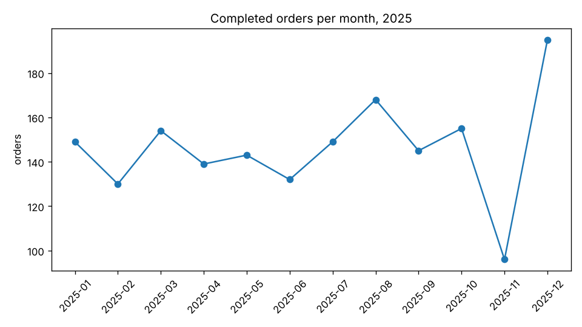

Guided project P2 · after E7 · 5 hours
Build a data-analysis agent
Ask a sales database questions in plain English. Your agent writes the SQL, runs it through a tool that can only read, draws charts, remembers follow-ups, and shows the query behind every number. It's , one of the most asked-for AI features in companies, built so that you can trust the answers and nothing can break the data.
What you'll build
A conversation in the terminal. The second question only makes sense after the first, and every answer shows its SQL. The format is exact; a real model words things its own way. The -> lines for each tool call are left out here.
Ask about the shop's sales. Type quit to stop. You: What was revenue from the South region last year? Customers in the South region spent $32,577.18 on completed orders in 2025. SQL: SELECT SUM(i.quantity * i.unit_cents) / 100.0 FROM order_items i JOIN orders o ON o.id = i.order_id JOIN customers c ON c.id = o.customer_id WHERE o.status = 'completed' AND c.region = 'South' You: Now split that by region Revenue from completed orders by region: North $34,534.91, South $32,577.18, East $32,033.78, West $24,975.36. SQL: SELECT c.region, SUM(i.quantity * i.unit_cents) / 100.0 AS revenue FROM order_items i JOIN orders o ON o.id = i.order_id JOIN customers c ON c.id = o.customer_id WHERE o.status = 'completed' GROUP BY c.region ORDER BY revenue DESC You: quit [4 model calls, $0.0012]
The brief
The ticket you're picking up
Every criterion below has a check in the starter's tests, or a number your eval measures.
As a shop manager, I want to ask questions about our sales in plain English and see how each answer was worked out, so that I can trust the numbers without writing SQL.
Acceptance criteria
- Answers questions about orders, products and customers from
shop.db, with the key number - Every answer lists the SQL that produced it
- Nothing can change the data: writes, attached databases and settings are refused, and a slow query stops after 2 seconds
- Draws a chart when the user asks for one, or when the answer is a trend
- Follow-ups such as "now split that by region" work
- Gets at least 9 of 10 eval questions exactly right, for about a cent a run
What you practise
- Giving the model the context it needs: the schema and its values (PM module 8)
- A tool that touches real data, with three layers of protection (E10)
- An agent loop with stop conditions and memory (E7)
- An eval checked by code, because the answers are numbers (E8)
Why this project
"Ask the data" is everywhere: dashboards with a question box, support tools, internal analytics. The hard part isn't getting SQL from a model. It's making sure a wrong or hostile query can't do damage, and knowing how often the numbers are right. That's what you'll be able to explain.
Architecture
How the parts fit
Most of it is in analyst.py; the eval is evals.py. The milestone that builds each part is in brackets, and dashed boxes can repeat.
- Know the data
describe_schema: tables, columns and values, in the system prompt (1) - Ask Claude
ask: the tool loop, withoutput_format=Answer(3) - Run SQL safely
run_sql: read-only file, an authorizer, time and row limits (2) - Draw a chart
make_chart, through the same safe path (4) - Answer, with the SQL
Result: the answer, its value, every query (3) - Remember
Session: earlier questions, answers and SQL (6)
Claude never touches the database. It writes text that looks like SQL; your code decides whether that text runs, how long for, and how much comes back.
Before you start
Set up the starter
Download the starter, install what it needs, make the database, and run the checker.
Download and unzip it into your projects folder
Terminalcd ~/projectscurl -LO https://lalwalataukir.github.io/how-ai-agents-work/projects/p2-data-agent-starter.zipunzip p2-data-agent-starter.zipcd data-agent
PowerShellcd ~\projectscurl.exe -LO https://lalwalataukir.github.io/how-ai-agents-work/projects/p2-data-agent-starter.zipExpand-Archive p2-data-agent-starter.zip .cd data-agent
Install, and add your API key
Terminaluv synccp .env.example .envcode .
Open
.envin VS Code and put in your API key. This project installs matplotlib for charts, souv synctakes a minute.Make the database
Terminaluv run make_data.pyExpected output
Wrote shop.db: 300 customers, 40 products, 2000 orders, 3771 order_items
shop.dbis a file: a year of made-up sales for a small online shop, the same for everyone so the eval's answers match. Four tables:customers,products,ordersandorder_items. Prices are in cents.Run the checker
Terminaluv run check.pyExpected output
[ ] 1 Know the data: not started test_every_column_with_its_type: NotImplementedError: milestone 1: describe_schema Hint: SELECT name FROM sqlite_master WHERE type = 'table' lists the tables; PRAGMA table_info("orders") gives each column's name and type. For TEXT columns, SELECT DISTINCT ... LIMIT 9: if 8 or fewer come back, list them. [ ] 2 A safe SQL tool: not started [ ] 3 The agent: not started [ ] 4 Charts: not started [ ] 5 An eval with exact answers: not started [ ] 6 Follow-up questions: not started 0 of 6 milestones done. Next: milestone 1.Make it a git repo
Terminalgit initgit add -Agit commit -m "Starter"
.gitignoreleaves outshop.dbandcharts/: anyone can make them again.
1 · Milestone 1 of 6
Know the data
Describe the database in a few lines of text: every table, column and type, and the values of short text columns. This goes in Claude's system prompt.
Claude can only write correct SQL for tables it knows about. Give it the and it knows ordered_at, not order_date. Give it the values too and it writes status = 'completed', not 'complete': the kind of mistake that returns zero rows and a confident wrong answer. Deciding what the model always needs to see is context engineering (PM module 8).
What you write
describe_schema(db): each table with its row count, then one line per column.
Peek at the data
Python has SQLite built in:
Terminaluv run python -c "import sqlite3; print(sqlite3.connect('shop.db').execute('SELECT * FROM orders LIMIT 3').fetchall())"Expected output
[(1, 182, '2025-05-31', 'completed'), (2, 226, '2025-12-21', 'completed'), (3, 3, '2025-08-18', 'completed')]
Each order has an id, a customer, a date as text and a status.
Write describe_schema
analyst.py (the starter)def describe_schema(db=DB): """Each table with its row count and columns. Text columns with a few distinct values list them, so Claude knows to write status = 'completed', not 'complete'.""" # TODO milestone 1: for each table, a line like "orders (2000 rows)", then one line per column, # such as " status TEXT: cancelled, completed, refunded". List values only when there are 8 or fewer. raise NotImplementedError("milestone 1: describe_schema")
- The tables:
SELECT name FROM sqlite_master WHERE type = 'table'. - The columns:
PRAGMA table_info("orders")gives one row per column; the name and type are the second and third items. - For a
TEXTcolumn, ask for up to 9 distinct values. If 8 or fewer come back, list them; more means it's free text, like names.
This function is your code, not the model's, so it can use any SQL. Only the queries Claude writes go through the safe path you build next.
- The tables:
Check it
Terminaluv run check.py 1Expected output
[x] 1 Know the data: 5 checks pass 1 of 1 milestones done.
See what Claude will know
Terminaluv run analyst.py --schemaExpected output
customers (300 rows) id INTEGER name TEXT region TEXT: East, North, South, West joined TEXT products (40 rows) id INTEGER name TEXT category TEXT: Books, Games, Garden, Home, Toys price_cents INTEGER orders (2000 rows) id INTEGER customer_id INTEGER ordered_at TEXT status TEXT: cancelled, completed, refunded order_items (3771 rows) order_id INTEGER product_id INTEGER quantity INTEGER unit_cents INTEGER
About 120 tokens: cheap to send with every call.
Commit
Terminalgit add -Agit commit -m "Milestone 1: know the data"
Stuck?
Hint 1
Two loops: one over the tables, and inside it one over conn.execute(f'PRAGMA table_info("{table}")'). Each row is (position, name, type, notnull, default, pk).
Hint 2
SELECT DISTINCT "region" FROM "customers" ORDER BY 1 LIMIT 9. Then ", ".join(values) when there are 8 or fewer.
The solution
Compare it with yours line by line, then type the difference rather than pasting: you learn more from the errors.
def describe_schema(db=DB): """Each table with its row count and columns. Text columns with a few distinct values list them, so Claude knows to write status = 'completed', not 'complete'.""" conn = sqlite3.connect(db) lines = [] tables = [row[0] for row in conn.execute("SELECT name FROM sqlite_master WHERE type = 'table' ORDER BY rowid")] for table in tables: count = conn.execute(f'SELECT COUNT(*) FROM "{table}"').fetchone()[0] lines.append(f"{table} ({count} rows)") for _, column, kind, *_ in conn.execute(f'PRAGMA table_info("{table}")'): line = f" {column} {kind}" if kind == "TEXT": values = [row[0] for row in conn.execute(f'SELECT DISTINCT "{column}" FROM "{table}" ORDER BY 1 LIMIT 9')] if len(values) <= 8: line += ": " + ", ".join(values) lines.append(line) conn.close() return "\n".join(lines)
If it breaks
sqlite3.OperationalError: no such table: sqlite_master- Check the path:
sqlite3.connectmakes a new, empty file when the one you name doesn't exist. Runuv run make_data.pyin this folder. test_every_table_with_its_row_count- Keep the tables in the order they were made (
ORDER BY rowid), and writeorders (2000 rows)exactly.
2 · Milestone 2 of 6
A safe SQL tool
The tool Claude's SQL runs through. It can only read, it stops slow queries, and it never sends back more than 200 rows.
Giving a model a database is the riskiest step in this project. A prompt injection hidden in a product name could ask for DROP TABLE orders; a careless join can run for minutes; SELECT * on a big table can send back a million tokens. You'll stop all three, in layers, so one mistake isn't enough: .
| Layer | Stops | How |
|---|---|---|
| Read-only file | Any write, even if another check misses it | mode=ro when connecting |
| An | Everything that isn't reading: writes, ATTACH, PRAGMA, extensions | conn.set_authorizer(only_reads) |
| A time limit | Queries that run too long, by mistake or on purpose | A progress handler that stops the query after 2 seconds |
| A row limit | Huge results that cost money and fill the context | fetchmany(MAX_ROWS + 1) |
What you write
run_sql(db, sql, max_rows, seconds): returns{"columns", "rows", "truncated"}, or raisesValueError.
Open the file read-only
Read-only, by URIconn = sqlite3.connect(Path(db).resolve().as_uri() + "?mode=ro", uri=True)as_uri()turns the path intofile:///…/shop.db, which works on Mac and Windows. Check the file exists first: in read-only mode SQLite can't create it, and the error is clearer from you.Refuse anything but reading
only_readsis written for you. SQLite calls it before every step of a statement, and it allows onlySELECT, reading columns, functions and recursive queries. Set it on the connection.Stop slow queries
A time limitdeadline = time.monotonic() + secondsconn.set_progress_handler(lambda: time.monotonic() > deadline, 10_000)
SQLite calls the handler every 10,000 steps; returning
Truestops the query with an "interrupted" error.Return a little, explain a lot
Fetch
max_rows + 1rows: if you get the extra one, settruncated. Catchsqlite3.Errorand raiseValueErrorwith a message Claude can act on: "Only SELECT queries are allowed", "The query took longer than 2 seconds. Make it simpler.", or SQLite's own message for a typo. Close the connection whatever happens.Check it
Terminaluv run check.py 2Expected output
[x] 1 Know the data: 5 checks pass [x] 2 A safe SQL tool: 9 checks pass 2 of 2 milestones done.
The tests are attacks:
DROP,DELETE,ATTACH,PRAGMA, two statements in one, and a query that never ends. Each must fail, and the file must be unchanged afterwards. That's E10's habit: every defence has a test.Try an attack yourself
Terminaluv run python -c "import analyst; analyst.run_sql(analyst.DB, 'DROP TABLE orders')"Expected output
ValueError: Only SELECT queries are allowed: nothing can be changed or attached.
The last line of the error. The table is still there.
Commit
Terminalgit add -Agit commit -m "Milestone 2: a safe SQL tool"
Check your understanding · Defence in depth
The authorizer already refuses DROP and DELETE. Why open the file read-only as well?
Stuck?
Hint 1
Put execute and fetchmany inside try, and conn.close() in finally. Read the column names from cursor.description before closing.
Hint 2
SQLite's error text tells you which case you're in: it contains "interrupted" for the time limit and "not authorized" for the authorizer. cursor.description is None when the statement wasn't a query.
The solution
Compare it with yours line by line, then type the difference rather than pasting: you learn more from the errors.
def run_sql(db, sql, max_rows=MAX_ROWS, seconds=MAX_SECONDS): """Run one query, read-only. Returns {"columns", "rows", "truncated"}. Raises ValueError, with a message Claude can act on, for anything that isn't allowed or fails.""" if not Path(db).is_file(): raise ValueError(f"{Path(db).name} doesn't exist. Run: uv run make_data.py") conn = sqlite3.connect(Path(db).resolve().as_uri() + "?mode=ro", uri=True) # the file itself is read-only conn.set_authorizer(only_reads) # and so is every statement deadline = time.monotonic() + seconds conn.set_progress_handler(lambda: time.monotonic() > deadline, 10_000) # True stops the query try: cursor = conn.execute(sql) if cursor.description is None: raise ValueError("That isn't a query. Write one SELECT statement.") columns = [column[0] for column in cursor.description] rows = cursor.fetchmany(max_rows + 1) except sqlite3.Error as error: if "interrupted" in str(error): raise ValueError(f"The query took longer than {seconds} seconds. Make it simpler.") from None if "not authorized" in str(error): raise ValueError("Only SELECT queries are allowed: nothing can be changed or attached.") from None raise ValueError(f"SQLite: {error}") from None finally: conn.close() return {"columns": columns, "rows": [list(row) for row in rows[:max_rows]], "truncated": len(rows) > max_rows}
If it breaks
sqlite3.OperationalError: unable to open database file- With
mode=ro, SQLite won't create a missing file. Check the path, and passuri=True. test_a_query_that_never_ends_is_stopped- The progress handler must return
Trueto stop. Set the deadline beforeexecute, and keepfetchmanyinside thetry: slow queries often spend their time there. test_one_statement_at_a_time- Python's
executealready refuses two statements with aProgrammingError. Make sure you catchsqlite3.Error, which covers it, not onlyOperationalError.
3 · Milestone 3 of 6
The agent
Connect Claude to the tool. It writes queries, reads the results or the errors, tries again if needed, and answers with the main number on its own.
This is E7's loop with one change: the answer comes back as an Answer, with the main number in value. That number is what your eval checks in milestone 5, so you don't have to fish it out of a sentence. Errors go back to Claude as tool results: a wrong column name becomes a second, better query rather than a crash.
What you write
run_tool(name, args, db, result): runsrun_sql(or passesmake_charton tochart_tool) and records every query.ask(question, memory, db, cost): the loop. Returns aResultwith the answer and the queries.
Read what's given
SYSTEMhas the rules a careful analyst would follow: get every number from a query, money is in cents, only completed orders count as sales.{schema}is wheredescribe_schemagoes.TOOLSoffersrun_sqlandmake_chart;Answer,CostandResultare ready.Write run_tool
Record the query in
result.queriesbefore running it, so attempts that fail are in the record too. Return the rows as JSON withjson.dumps(..., default=str). AValueErrorbecomes its message, withTruefor failed.Write ask
Build the system prompt with
SYSTEM.format(schema=describe_schema(db)). Start the messages withmemory, then the question. Then, at mostMAX_CALLStimes:- Call
client.messages.parsewithtools=TOOLSandoutput_format=Answer, and add the usage tocost. - Append the reply. If
stop_reasonis"end_turn", the answer isresponse.parsed_output; any other stop that isn't"tool_use"means it was cut off. - Otherwise run every tool call and send all the results back in one message.
If the loop runs out, return a
Resultthat says it stopped. A stop condition is a promise about cost: one question can never make more than 8 calls.- Call
Check it
Terminaluv run check.py 3Expected output
[x] 1 Know the data: 5 checks pass [x] 2 A safe SQL tool: 9 checks pass [x] 3 The agent: 7 checks pass 3 of 3 milestones done.
Ask your first question
Terminaluv run analyst.py "How many completed orders were there in 2025?"Expected output
-> run_sql: SELECT COUNT(*) FROM orders WHERE status = 'completed' AND order_date LIKE '2025-%' -> run_sql: SELECT COUNT(*) FROM orders WHERE status = 'completed' AND ordered_at LIKE '2025-%' There were 1,755 completed orders in 2025. SQL: SELECT COUNT(*) FROM orders WHERE status = 'completed' AND order_date LIKE '2025-%' SQL: SELECT COUNT(*) FROM orders WHERE status = 'completed' AND ordered_at LIKE '2025-%' [3 model calls, $0.0010]
An example run against a scripted stand-in for Claude: the format is exact, but a real model words things its own way, and may write different SQL. Here the first query used a column that doesn't exist; the error went back, and the second query worked.
Commit
Terminalgit add -Agit commit -m "Milestone 3: the agent"
Check your understanding · Errors in the loop
Claude's query fails with "no such column: order_date". What should the code do?
Stuck?
Hint 1
run_tool is E5's: one if per tool name, and try/except ValueError around the call.
Hint 2
ask is E7's steps without the plan: a for _ in range(MAX_CALLS): loop, a Result made before it, and result.answer set when Claude answers.
The solution
Compare it with yours line by line, then type the difference rather than pasting: you learn more from the errors.
def run_tool(name, args, db, result): """Run one tool call, and keep a record of it in result. Returns the text to send back, and whether it failed. Errors go back to Claude so it can fix its query.""" if name == "make_chart": return chart_tool(args, db, result) if name != "run_sql": return f"There is no tool called {name}.", True result.queries.append(args["sql"]) try: return json.dumps(run_sql(db, args["sql"]), default=str), False except ValueError as error: return str(error), True
def ask(question, memory=(), db=DB, cost=None): """Answer one question: Claude writes queries, the code runs them, until Claude answers. memory holds earlier questions and answers; cost adds up what every call costs.""" cost = cost if cost is not None else Cost() result = Result(answer=Answer(answer=f"Stopped after {MAX_CALLS} model calls without an answer.", value=None)) system = SYSTEM.format(schema=describe_schema(db)) messages = list(memory) + [{"role": "user", "content": question}] for _ in range(MAX_CALLS): # stop condition, as in E7 response = client.messages.parse( model=MODEL, max_tokens=8000, system=system, tools=TOOLS, messages=messages, output_format=Answer, ) cost.add(response.usage) messages.append({"role": "assistant", "content": response.content}) if response.stop_reason != "tool_use": if response.stop_reason == "end_turn": result.answer = response.parsed_output else: result.answer = Answer(answer=f"Stopped early ({response.stop_reason}).", value=None) return result results = [] for block in response.content: if block.type == "tool_use": print(f" -> {block.name}: {block.input.get('sql', '')}", file=sys.stderr) text, failed = run_tool(block.name, block.input, db, result) results.append({"type": "tool_result", "tool_use_id": block.id, "content": text, "is_error": failed}) messages.append({"role": "user", "content": results}) return result
If it breaks
KeyError: 'schema'- The system prompt needs
SYSTEM.format(schema=...). Without.format, Claude sees the text{schema}. TypeError: Object of type ... is not JSON serializable- Pass
default=strtojson.dumps, so dates and other values become text. Stopped after 8 model calls without an answer.- Claude kept querying. Print the queries: usually it can't find a column. Check the schema in the system prompt.
4 · Milestone 4 of 6
Charts
Some answers are trends. Give Claude a tool that draws a query's result as a bar or line chart, through the same safe path as every other query.
The chart tool takes SQL too, so it must go through run_sql: a second way to run queries is a second door to guard, and the one people forget. Checking the result's shape (two columns, numbers in the second) and sending clear errors back lets Claude fix a bad chart request the way it fixes a bad query.
What you write
make_chart(db, title, kind, sql): runs the query, draws it, saves a PNG incharts/, returns the path.chart_tool(args, db, result): the tool call, with the query and the chart recorded inresult.
Write make_chart
matplotlib in six linesfig, ax = plt.subplots(figsize=(8, 4.5))ax.bar(labels, values) # or ax.plot(labels, values, marker="o") for a lineax.set_title(title)fig.tight_layout()fig.savefig(path, dpi=120)plt.close(fig) # free the memory: an agent can draw many
Name the file after the title: lower case, with anything that isn't a letter or digit turned into
-. RaiseValueErrorwhen there aren't exactly two columns, no rows, or the second column isn't numbers.Write chart_tool
Like
run_tool: record the query, callmake_chart, send aValueErrorback as an error, and on success add the chart's path, relative to the project, toresult.charts.Check it
Terminaluv run check.py 4Expected output
[x] 1 Know the data: 5 checks pass [x] 2 A safe SQL tool: 9 checks pass [x] 3 The agent: 7 checks pass [x] 4 Charts: 6 checks pass 4 of 4 milestones done.
Ask for a chart
Terminaluv run analyst.py "Show completed orders per month as a chart"Expected output
-> run_sql: SELECT substr(ordered_at, 1, 7) AS month, COUNT(*) AS orders FROM orders WHERE status = 'completed' GROUP BY month ORDER BY month -> make_chart: SELECT substr(ordered_at, 1, 7) AS month, COUNT(*) AS orders FROM orders WHERE status = 'completed' GROUP BY month ORDER BY month Orders peaked in 2025-12 with 195 completed orders; the quietest month was 2025-11 with 96. SQL: SELECT substr(ordered_at, 1, 7) AS month, COUNT(*) AS orders FROM orders WHERE status = 'completed' GROUP BY month ORDER BY month Chart saved: charts/completed-orders-per-month-2025.png [2 model calls, $0.0006]
An example run against a scripted stand-in for Claude: the format is exact, but a real model words things its own way, and may write different SQL.

charts/completed-orders-per-month-2025.png, drawn by the finished code from the real data. Commit
Terminalgit add -Agit commit -m "Milestone 4: charts"
Stuck?
Hint 1
data = run_sql(db, sql) first. Labels are [str(row[0]) for row in data["rows"]]; check the values with isinstance(value, (int, float)).
Hint 2
re.sub(r"[^a-z0-9]+", "-", title.lower()).strip("-") makes a safe file name. path.relative_to(HERE).as_posix() gives charts/…png on every system.
The solution
Compare it with yours line by line, then type the difference rather than pasting: you learn more from the errors.
def make_chart(db, title, kind, sql): """Draw a two-column query (labels, numbers) as a bar or line chart. Returns the PNG's path.""" data = run_sql(db, sql) # the same safe path as every other query if len(data["columns"]) != 2 or not data["rows"]: raise ValueError("A chart needs a query with two columns, labels then numbers, and at least one row.") labels = [str(row[0]) for row in data["rows"]] values = [row[1] for row in data["rows"]] if not all(isinstance(value, (int, float)) for value in values): raise ValueError("The second column must be numbers.") fig, ax = plt.subplots(figsize=(8, 4.5)) if kind == "line": ax.plot(labels, values, marker="o") else: ax.bar(labels, values) ax.set_title(title) ax.set_ylabel(data["columns"][1]) ax.tick_params(axis="x", labelrotation=45 if len(labels) > 6 else 0) fig.tight_layout() CHARTS.mkdir(exist_ok=True) path = CHARTS / (re.sub(r"[^a-z0-9]+", "-", title.lower()).strip("-")[:60] + ".png") fig.savefig(path, dpi=120) plt.close(fig) return path
def chart_tool(args, db, result): """The make_chart tool call: returns the text to send back, and whether it failed.""" result.queries.append(args["sql"]) try: path = make_chart(db, args["title"], args["kind"], args["sql"]) except ValueError as error: return str(error), True result.charts.append(path.relative_to(HERE).as_posix()) return json.dumps({"saved": path.name}), False
If it breaks
A window opens, or the run hangs- The file sets
matplotlib.use("Agg")before importingpyplot, so charts go to files only. Keep that order. test_the_query_needs_labels_and_numbers- Check the row count too: a query that matches nothing can't be drawn.
5 · Milestone 5 of 6
An eval with exact answers
Ten questions whose right answers are known, checked by code. Run it after every change to the prompt, the tools or the model.
In E8 you used an LLM judge, because "is this answer good?" needs judgement. Here the answers are numbers, so code can check them exactly, for free, in milliseconds. Use a judge only when you have to. A small allows for rounding: $70.72 for $70.7243 is right.
eval_questions.json holds each question, the expected value, and the SQL that produced it, so you can check any answer yourself. A test runs every one of those queries against shop.db, so the expected values can't drift from the data.
What you write
grade(answer, case)inevals.py: right or wrong, and why.main(limit): asks every question with a fresh memory, grades it, prints a line each and a summary.
Write grade
No value: wrong. A value further than
max(0.01, 0.5% of the expected)away: wrong, saying both numbers. A case withcontains, such as the best-selling product, also needs that name in the answer's text. Otherwise right.Write main
One
analyst.Cost()for the whole run, passed to everyanalyst.ask, so the summary shows what the eval cost. An empty memory for each question: an eval case must not depend on the one before.Check it
Terminaluv run check.py 5Expected output
[x] 1 Know the data: 5 checks pass [x] 2 A safe SQL tool: 9 checks pass [x] 3 The agent: 7 checks pass [x] 4 Charts: 6 checks pass [x] 5 An eval with exact answers: 7 checks pass 5 of 5 milestones done.
Run the eval
Terminaluv run evals.pyExpected output
[x] 1. How many completed orders were there in 2025? (right; SQL queries: 2) [x] 2. What was the revenue from completed orders in March 2025, in dollars? (right; SQL queries: 1) [x] 3. Which product category brought in the most revenue from completed orders, and how much in dollars? (right; SQL queries: 1) [x] 4. How many customers are in the West region? (right; SQL queries: 1) [x] 5. What is the average value of a completed order, in dollars? (right; SQL queries: 1) [x] 6. What percentage of all orders were refunded? (right; SQL queries: 1) [x] 7. How many different customers placed at least one completed order between October and December 2025? (right; SQL queries: 1) [x] 8. Which product sold the most units in completed orders, and how many units? (right; SQL queries: 1) [x] 9. What was the revenue from completed orders by customers in the South region, in dollars? (right; SQL queries: 1) [x] 10. How many orders had three or more different products in them? (right; SQL queries: 1) 10 of 10 right (100%). 21 model calls, $0.0064
An example run against a scripted stand-in for Claude: the format is exact, but a real model words things its own way, and may write different SQL. Expect 8 to 10 right with Haiku 5.5. Run it three times before trusting a change.
For a wrong answer, run its question with
analyst.pyand read the SQL. Most misses are one of three things: counting all orders instead of completed ones, forgetting to divide cents by 100, or a date range off by a day. Each one is a rule to add toSYSTEM, and the eval tells you whether it helped.Commit
Terminalgit add -Agit commit -m "Milestone 5: an eval with exact answers"
Check your understanding · Checking answers
Why does this eval check answers with code, when E8 used an LLM judge?
Stuck?
Hint 1
tolerance = max(0.01, abs(case["value"]) * 0.005), then abs(answer.value - case["value"]) > tolerance means wrong.
Hint 2
for n, case in enumerate(CASES[:limit], 1):. CASES[:None] is the whole list, so one line handles both.
The solution
Compare it with yours line by line, then type the difference rather than pasting: you learn more from the errors.
def grade(answer, case): """(passed, why) for one answer. The value must be within 0.5% of the right number (or 0.01), and the answer must name the thing asked for, when the case says what that is.""" if answer.value is None: return False, "no value" if abs(answer.value - case["value"]) > max(0.01, abs(case["value"]) * 0.005): return False, f"value {answer.value}, expected {case['value']}" if "contains" in case and case["contains"].lower() not in answer.answer.lower(): return False, f"doesn't mention {case['contains']}" return True, "right"
def main(limit=None): """Ask every question with a fresh memory, grade it, and print a line each and a summary.""" cost, passed = analyst.Cost(), 0 for n, case in enumerate(CASES[:limit], 1): result = analyst.ask(case["question"], [], analyst.DB, cost) ok, why = grade(result.answer, case) passed += ok print(f" [{'x' if ok else ' '}] {n:>2}. {case['question']} ({why}; SQL queries: {len(result.queries)})") total = len(CASES[:limit]) print(f"{passed} of {total} right ({passed / total:.0%}). {cost.calls} model calls, ${cost.dollars():.4f}") return passed, total
If it breaks
TypeError: unsupported operand type(s) for -: 'NoneType' and 'float'- Check
answer.value is Nonebefore subtracting. ZeroDivisionErrorevals.py 0asks no questions. Use a number from 1 to 10.
6 · Milestone 6 of 6
Follow-up questions
Remember the conversation, so "now split that by region" works, without letting it grow forever.
"Split that by region" means nothing on its own. Claude needs the previous question, its answer and, most usefully, its SQL: changing a query is easier and more reliable than writing a new one from the words. But memory is resent with every call, so it costs more each turn. Keep the last few turns, and only the parts that help.
What you write
Session.remember(question, result): adds two messages toself.memory, then trims it.
Write remember
The two messages to add{"role": "user", "content": question}{"role": "assistant", "content": answer + "\n\n<sql>\n" + last_3_queries + "\n</sql>"}
Then keep only
self.memory[-2 * MAX_TURNS:]: two messages per turn. Memory keeps answers and SQL, not the tool results: the rows were for answering, and they would fill the context.Check it
Terminaluv run check.pyExpected output
[x] 1 Know the data: 5 checks pass [x] 2 A safe SQL tool: 9 checks pass [x] 3 The agent: 7 checks pass [x] 4 Charts: 6 checks pass [x] 5 An eval with exact answers: 7 checks pass [x] 6 Follow-up questions: 3 checks pass 6 of 6 milestones done.
Have a conversation
Terminaluv run analyst.pyExpected output
Ask about the shop's sales. Type quit to stop. You: What was revenue from the South region last year? Customers in the South region spent $32,577.18 on completed orders in 2025. SQL: SELECT SUM(i.quantity * i.unit_cents) / 100.0 FROM order_items i JOIN orders o ON o.id = i.order_id JOIN customers c ON c.id = o.customer_id WHERE o.status = 'completed' AND c.region = 'South' You: Now split that by region Revenue from completed orders by region: North $34,534.91, South $32,577.18, East $32,033.78, West $24,975.36. SQL: SELECT c.region, SUM(i.quantity * i.unit_cents) / 100.0 AS revenue FROM order_items i JOIN orders o ON o.id = i.order_id JOIN customers c ON c.id = o.customer_id WHERE o.status = 'completed' GROUP BY c.region ORDER BY revenue DESC You: quit [4 model calls, $0.0012]
An example run against a scripted stand-in for Claude: the format is exact, but a real model words things its own way, and may write different SQL. The
->lines for each tool call are left out.Commit
Terminalgit add -Agit commit -m "Milestone 6: follow-up questions"
Stuck?
Hint 1
self.memory += [..., ...] adds both at once. "\n".join(result.queries[-3:]) is the last three queries, and or "(no queries)" covers an answer without any.
Hint 2
Trimming by slicing keeps whole turns, because you always add two messages: a user, then an assistant.
The solution
Compare it with yours line by line, then type the difference rather than pasting: you learn more from the errors.
class Session: """A conversation: each question can refer back to earlier ones ("now split that by region").""" def __init__(self, db=DB): self.db, self.memory, self.cost = db, [], Cost() def ask(self, question): result = ask(question, self.memory, self.db, self.cost) self.remember(question, result) return result def remember(self, question, result): """Keep the question, the answer and the last queries, for at most MAX_TURNS turns.""" sql = "\n".join(result.queries[-3:]) or "(no queries)" self.memory += [{"role": "user", "content": question}, {"role": "assistant", "content": f"{result.answer.answer}\n\n<sql>\n{sql}\n</sql>"}] self.memory = self.memory[-2 * MAX_TURNS:]
If it breaks
anthropic.BadRequestError: ... roles must alternate- Memory must go user, assistant, user, assistant. Add both messages every time, and trim an even number.
The follow-up answers a different question- Check the SQL is in the assistant message: without it, Claude has to guess what "that" was.
Go further
Stretch goals
Pick one or two. Run the eval before and after each.
Your own CSV
Add load_csv.py: read a CSV with Python's csv module, create a table with a column per header, and insert the rows. describe_schema picks it up with no other change. Write five eval questions for it.
A web page
Put Session behind FastAPI, as in E9: one endpoint for a question, one that serves a chart by name. Add a rate limit before you share it: every question costs money.
Check the SQL before it runs
Ask a second, cheap call to review each query against the question ("does this count only completed orders?") and run the eval to see if it catches more mistakes than it costs.
A LangGraph version
Rebuild the loop as a graph, as in E7: a node that writes SQL, one that runs it, one that answers, with a checkpoint so a long analysis can pause for approval before an expensive query.
Show it
Write it up
Push it to a public GitHub repo, then replace README.md with this, keeping every line true. Add your chart as an image: it's the first thing people look at.
# Data agent Ask questions about a shop's sales in plain English. Claude writes the SQL, a read-only toolruns it, and every answer shows the queries behind it, with charts for trends. ## What it does <a short conversation: two questions and a follow-up, with the SQL shown> ## How it works - The schema, with the values of short text columns, goes in the system prompt- Claude (Haiku 5.5) writes SQL through a run_sql tool, in a loop of at most 8 calls- run_sql opens the database read-only, refuses anything but reading with an authorizer, stops queries after 2 seconds and returns at most 200 rows; every defence has a test- make_chart draws trends with matplotlib, through the same safe path- Follow-ups remember the last 6 turns, with the SQL behind each answer ## Evals 10 questions with exact answers, checked by code: <score> of 10, for about $<cost> a run.<what you changed after looking at the misses, and what it did to the score> ## Run it yourself uv synccp .env.example .env # add your API keyuv run make_data.pyuv run analyst.pyuv run check.py # the offline tests ## What I'd do next - <two honest improvements>
One line for your CV
"Built a text-to-SQL data agent in Python on the Claude API: a read-only, time-limited SQL tool with attack tests, charts, conversation memory, and an exact-answer eval (
Be ready to explain
- The four layers of protection around the SQL, and what each one stops
- Why the column values go in the system prompt
- Why the eval checks numbers with code instead of a judge
- What memory keeps, what it drops, and why the SQL matters
- One answer that was wrong, why, and what fixed it
Check yourself
Done when
Tick each one when it's true. When all are ticked, P2 is marked done on the track page.